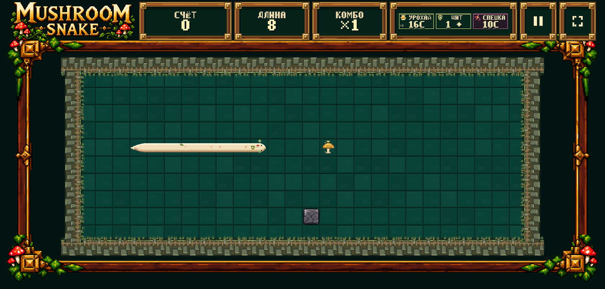
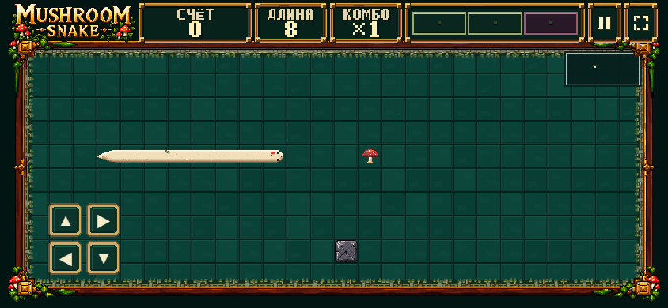
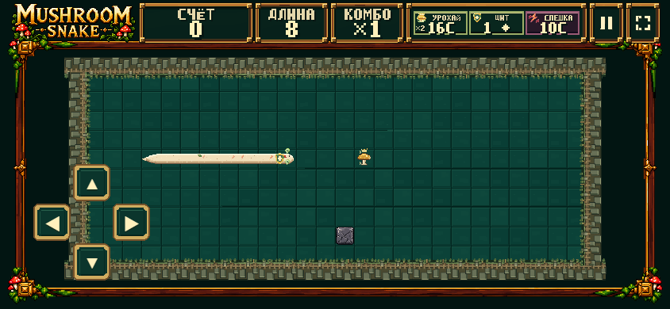
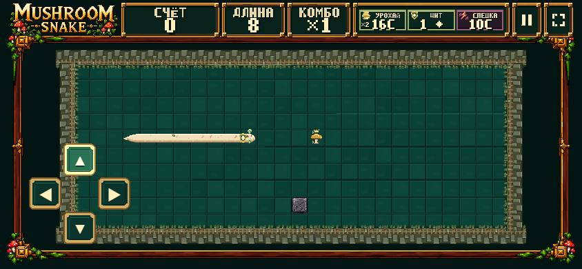
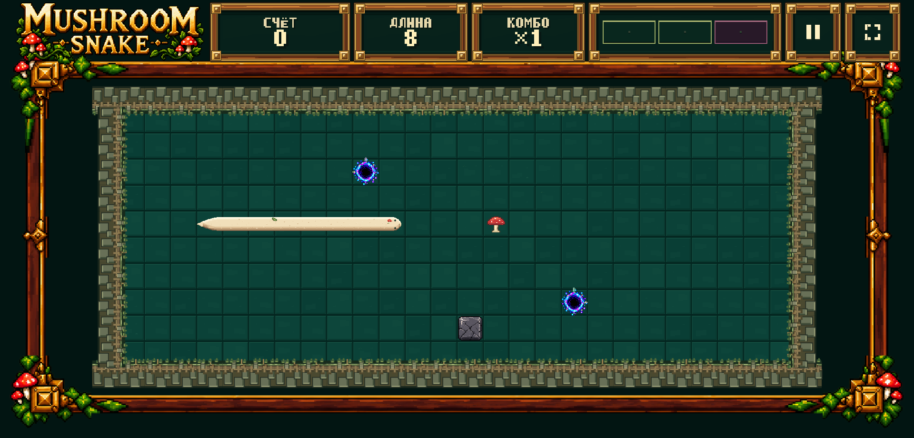
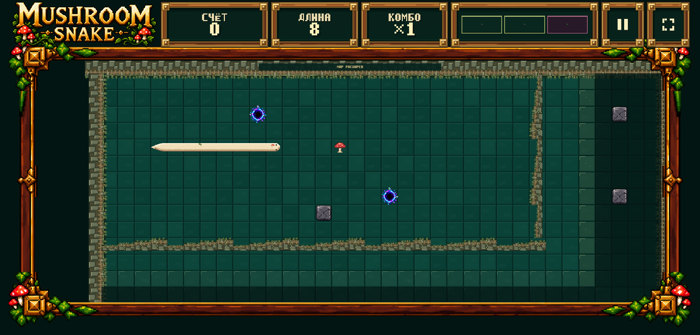
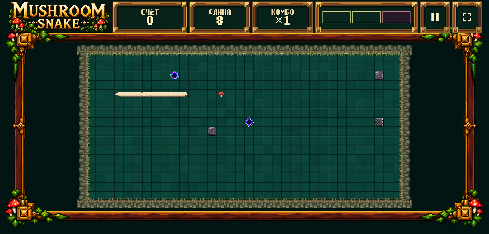
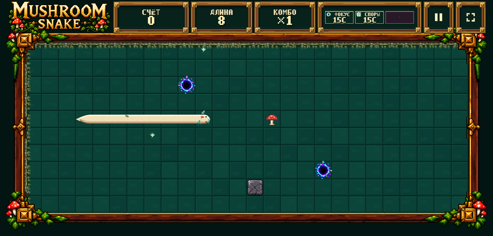
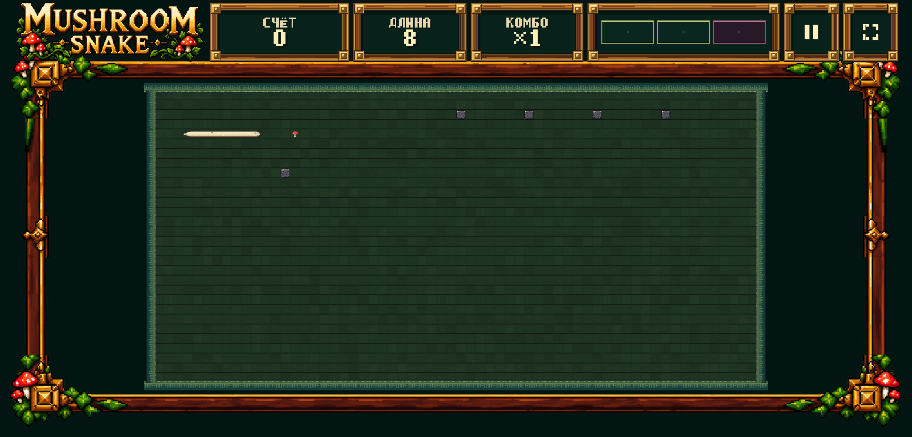

Play DEV · FIT WORLD | STABLE CAMERA · Measurements and targeted tests

Same approved 764e180 wood/gold normal/pressed assets. Four 48×48 targets in a directional cross; 148×148 cluster, fixed lower-left. Input logic unchanged.






The old environmental boundary opens during the one-second canonical-time zoom. The new full world fits at completion. Newly unlocked outer territory is temporarily outside the arena during early zoom frames: old-fit continuity and immediate full-new-world visibility cannot both hold. This is explicitly pending human choice, not a claimed full-visibility pass.

